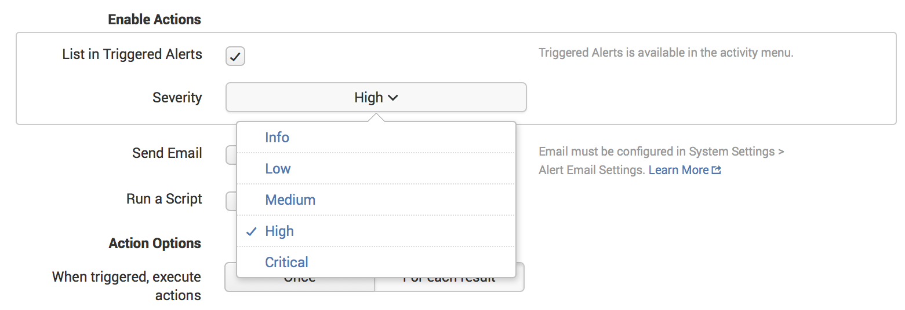

An alert is an action that a saved search triggers based on the results of the search. When creating an alert, you specify a condition that triggers the alert. Typically the action is an email based on the results of the search. But you can also choose to run a script or to list the alert as a triggered alert in Settings. When you create an alert you are creating a saved search with trigger conditions for the alert.
To avoid sending out alerts too frequently, specify a throttle condition for an alert.
The following list describes the types of alerts:
This section discusses the scenarios for each type of alert.
Use a per result alert to notify when a real-time search returns a result that matches a condition. Typically, you specify a throttle condition so that the alert triggers only once for a specified time period. Per result examples include the following:
Use a scheduled alert to notify when a scheduled search returns results that meet a specific condition. A scheduled alert is useful when an immediate reaction to the alert is not a priority. Scheduled alert examples include:
Use a rolling window alert to monitor the results of a real-time search within a specified time interval. For example, monitor the results every 10 minutes or every four hours. Rolling-window alert examples include:
Use throttling to reduce the frequency at which an alert triggers. An alert can trigger frequently based on similar results that the search returns. The schedule to run an alert can also cause the alert to trigger frequently. To reduce the frequency of the alert firing, configure the following:
For example, you can create an alert that fires when a system error occurs. For this example, assume that when the system error occurs, it occurs 20 or more times each minute. However, you want to send an alert only once every hour. To reduce the frequency of the alert firing, configure throttling for the alert.
index=_internal log_level=ERRORlog_level.You can set up a per-result alert that throttles events that share the same clientip and host values. For example, a real-time search with a 60 second window triggers an alert every time an event with disk error appears. Ten events with the error message that occurs in the window triggers five disk error alerts, which is ten alerts within one minute. If the alert sends an email notification each time it triggers, you can overwhelm a email Inbox.
You can configure throttling so that when one alert of this type triggers, it suppresses all successive alerts of the same type for the next 10 minutes. After each successive 10 minutes period pass, the alert can trigger again.
For scheduled searches that run on a frequent basis, and you do not want to be notified for each run, set the throttling controls to suppress the alert to a longer time window.
For real-time searches, if you configure an alert so that it fires once for a trigger condition, you do not need to configure throttling. If the alert fires more than once for the trigger condition, consider throttling to suppress results.
When you configure throttling for a real-time search, start with a throttling period that matches the length of the base search's time window. Expand the throttling period if necessary. This prevents multiple notifications for a given event.
A scheduled report is similar to an alert. A scheduled report can execute an action each time the scheduled report runs. For example, a scheduled report that sends a daily report of failed log-ins sends an email even if there are no failed log-ins.
An alert executes its action only when it meets specified conditions. An alert to notify of failed log-ins each hour does not send an email if there are no failed log-ins for a specific hour.
For more information, see Schedule reports, in the Reporting Manual.
The ability to run an alert and edit an alert depend on the user role and capabilties assigned to that role. For information about managing permissions for knowledge objects such as alerts, see Manage knowledge object permissions in the Knowledge Manager.
By default, only users with the Admin or Power roles can do the following:
You can share an alert in an app so other users of the app can take advantage of the alert. You share an alert by editing the permissions of the alert.
When you share an alert for a user who is not an Admin user or Power user, make sure the user has the necessary permissions to access the alerting features. For example, make sure the user has the capability to run a real-time search if you share a per result alert.
When you create an alert, you can edit permissions for the alert after you configure it. You can later edit permissions for the alert from the Alerts page. You can share an alert from the Alerts page:
The per-result alert is the most basic type of alert. It runs in real-time over an "all-time" time span. The alert triggers whenever the search returns a result.
You can create a search to retrieve events from an index. You can also use use transforming commands to return results based on processing the retrieved events. A per-result alert triggers in both cases, when the search returns an event or when a transforming command returns results.
The following procedure shows how to create a per-result alert.
index=_internal (log_level=ERROR OR log_level=WARN* OR log_level=FATAL OR log_level=CRITICAL) | stats count as log_eventsA scheduled alert evaluates the results of a historical search that runs over a specified time range on a regular schedule. The alert fires when it encounters the trigger condition.
For example, you can create a scheduled alert to monitor online sales. The search runs daily at midnight and triggers when the sum of the sales of a specific item is below 500 for the previous day. When the alert triggers, it sends an email to the appropriate administrators monitoring sales.
index=_internal (log_level=ERROR OR log_level=WARN* OR log_level=FATAL OR log_level=CRITICAL) | stats count as log_eventsWhen scheduling an alert, you can use cron notation for customized schedules. When specifying a cron schedule, only five cron parameters are available, not six. The sixth parameter for year, common in other forms of cron notation, is not available.
The following cron parameters:
* * * * *
correspond to:
minute hour day month day-of-week
Following are some cron examples:
*/5 * * * * Every 5 minutes.
*/30 * * * * Every 30 minutes.
0 */12 * * * Every 12 hours, on the hour.
*/20 * * * 1-5 Every 20 minutes, Monday through Friday.
0 9 1-7 * 1 First Monday of each month, at 9am.When you select Run on Cron Schedule for the time range of a scheduled alert, enter the earliest and latest parameters for a search. What you enter overrides the time range you set when you first ran the search.
To avoid overlaps or gaps, the execution schedule should match the search time range. For example, to run a search every 20 minutes the search's time range should also be 20 minutes (-20m).
This section discusses some best practices for scheduled alerts.
Coordinating the alert's schedule with the search time range prevents situations where event data is evaluated twice by the search. This can happen if the search time range exceeds the search schedule, resulting in overlapping event data sets.
In cases where the search time range is shorter than the time range for the scheduled alert, an event might never be evaluated.
This practice is important in distributed search deployments where event data might not reach the indexer precisely at the moment when it is generated. A delay ensures that you are counting all events, not just the events that were quickest to get indexed.
This example shows how to configure an alert that builds 30 minutes of delay into the alert schedule. Both the search time range and the alert schedule span one hour, so there are no event data overlaps or gaps.
The alert runs every hour at the half hour. It collects an hour's worth of event data, beginning an hour and a half before the search runs. When the scheduled search kicks off at a designated time, such as 3:30 pm, it collects the event data that was indexed from 2:00 pm to 3:00 pm.
Depending on your Splunk Enterprise deployment, you might be able to run only one scheduled search at a time. In this case, when you schedule multiple searches to run at approximately the same time, the search scheduler ensures that all scheduled searches run consecutively for the period of time over which they gather data.
However, you might have cases where you need certain searches to run ahead of others. This is to ensure that the searches obtain current data or to ensure that there are no gaps in data collection.
You can configure the priority of scheduled searches in the savedsearches.conf configuration file. See "Configure the priority of scheduled reports" in the Reporting Manual.
Trigger conditions apply to two types of conditional alerts:
Set the triggering conditions when you set values for the Trigger condition field in the Save As Alert dialog box, as described in the following subtopics.
A basic conditional alert triggers when the number of results of a scheduled search meet, exceed, or are less than a specified numerical value. When you create the alert, you can specify the following conditions:
The alert triggers when the number of hosts in the results rises by a count of more than 12.
The behavior for basic conditional alerts differs slightly for a rolling-window alert. The alert triggers when the set condition occurs within the rolling time window of the search.
For example, a rolling-window alert that triggers when a time window of 60 seconds has five or more results. If the real-time search returns one result and then four more results five minutes later, the alert does not trigger. The alert does trigger If the search returns five results within a single 60-second span.
An advanced conditional alert uses a secondary, custom conditional search to evaluate the results of a scheduled or real-time search. The alert triggers when the custom search returns any number of results. If the alerting conditions are not met, then the custom conditional search returns zero results.
A secondary conditional search can help reduce the incidence of false positive alerts.
In the following example, the alert triggers when there are 10 or more log level events that are not INFO. When the alert triggers, it sends an email with the results of the search. The search results detail the count for each log level.
index=_internal (log_level=ERROR OR log_level=FATAL OR log_level=CRITICAL) | stats count by log_levelIt might appear that you can get the same results if you specify instead, the following search for the base search of a basic conditional search:
log_level=ERROR OR log_level=FATAL OR log_level=CRITICAL) | stats count by log_level | search count > 10However, a basic conditional alert based on this search provides different results. The search results contain only log level values that are greater than 10. The results from the advanced conditional search details the count for all log levels, but triggers only when the log levels are greater than 10.
The behavior for advanced conditional alerts differs slightly for a rolling-window alert, which runs in real-time. For a rolling-window alert, the alert triggers when the set condition occurs within the rolling time window of the search.
For the previous example, you can design a rolling-window alert with the same base search and get similar results with the custom condition search. Set the rolling window to a 10 minutes time span. When the real-time search returns 10 log level entries within the 10 minute time span, the alert triggers.
For more examples of scheduled alerts, see "Alert examples," in this manual.
Use a rolling-window alert to monitor and evaluate events in real time within a rolling window. The alert triggers only when it meets the trigger condition within a specified time period.
The rolling-window alert type is in some ways a hybrid of a per-result alert and a scheduled alert. A rolling-window alert and a per result alert both run in real-time. But unlike the per result alert, a rolling-window alert does not trigger each time the search returns a result. A rolling-window alert fires only when it meets specified trigger conditions within the specified time window. This makes the alert similar to a scheduled alert.
index=_internal (log_level=ERROR OR log_level=WARN* OR log_level=FATAL OR log_level=CRITICAL) | stats count as log_eventsWhen you create a rolling-window alert, you specify a time span for a real-time search window. Real-time search windows can be any number of minutes, hours, or days. The alert monitors events as they pass through the window in real-time.
For example, you can create an alert that triggers when a login for a user fails four times in a 10 minute period. When the alert runs, various login failure events pass through this window. The alert triggers only when four login failures for the same user occur within the span of the 10 minute window.
This example might appear to fail in the following scenario. A user experiences three login failures in quick succession. After 11 minutes pass, the user has another login failure. The alert does not trigger because the first three failures and the fourth failure are in different time windows.
Trigger conditions apply to two types of rolling-window alerts:
You set the triggering conditions when you set values for the Trigger condition field in the Save As Alert dialog, as described in the following subtopics.
A basic conditional alert triggers when the number of results from a search, within a specified time window, meet, exceed, or are less than a specified numerical value. When you create the alert, you can specify the following conditions:
You create a basic conditional alert for a rolling-window similarly to how you create one for a scheduled alert. See Set up triggering conditions for a scheduled alert for an example.
An advanced conditional alert uses a secondary, custom conditional search to evaluate the results of a scheduled or real-time search. For a rolling-window alert, the alert triggers when the custom search returns any number of results within the specified time window. If the alerting conditions are not met, then the custom conditional search should return zero results.
A secondary conditional search can help reduce the incidence of false positive alerts.
You create an advanced conditional alert for a rolling-window similarly to how you create one for a scheduled alert. See Set up triggering conditions for a scheduled alert for an example.
You can update alerts from the following places in Splunk Web.
| Location | Description |
|---|---|
| Alerts page | Provides a listing of all all alerts created within an app. It contains options for editing an alert. Click an alert entry to view the detail page for the alert. |
| Alert detail page | Provides links to update an alert. When applicable, lists triggered alerts. |
| Settings | Alerts are a type of saved search. You can view saved searches, reports, and alerts from the Searches, reports, and alerts view in Settings. From this view, you can do the following:
|
The Alerts page lists all alerts for an app. The Alerts page is available from the top-level menu for an app.
From the Alerts page you can do the following:
You can modify the search for an alert by opening the alert in Search.
The Alert details page provides access to editing views for alerts. You can modify the search and update details from this page.
The Alert details page also displays the trigger history for the alert.
The Alert details page provides a listing of the current settings for an alert. You can view and modify the following details:
If you specify List in Triggered Alerts as an alert action, the alert detail page lists the trigger history for the alert.
From the trigger history you can view the results that triggered the alert.
You can also view trigger history from the Alerts Manager.
For more information, see Review triggered alerts.
The Searches, reports, and alerts view in Settings lets you enter the information to create and modify alerts. Some fields for modifying an alert are available only from the Settings. You typically create alerts from the Search page by saving a search as an alert. You typically modify alerts from the Alerts page or an alert detail page.
However, you can create, view, and update alerts from Settings. From Settings you can also define the retention time and enable summary indexing for alerts. Retention time defines how long to keep a record of triggered alerts, and associated artifacts, available. Summary indexing enables faster overall searching.
To view a listing of alerts in Settings:
The following alert properties are only available from the Searches, reports, and alerts view.
See Define alert retention time and Enable summary indexing for an alert for details. To modify an alert from this view:
Retention time is how long to keep a record of triggered alerts, and associated artifacts, available. You can view the listing of triggered alerts from the detail page for an alert.
To review and manage your triggered alerts, go to the Alert manager by clicking the Triggered Alerts link on the Splunk Bar. For more information, see "Review triggered alerts" in this manual.
You can enable summary indexing for an alert. Summary indexing lets you write the results of a report to a separate index. This enables faster searching overall. See Use summary indexing for increased reporting efficiency.
You can enable the following alert actions:
You can configure an alert to send an email notification to specified recipients when the alert triggers. The email notification is a multipart MIME message that includes both HTML and text parts.
You configure the email notification action for an alert when you save the alert from the Search page. You can also configure email notification from the Alerts Page and directly from a search command.
Before you can send an email notification, configure the email notification settings in Settings. See Configure email notification settings.
There are several contexts from which you can send email notifications. The email options available differ, depending on the context.
This topic covers alert actions from a search job. See Schedule reports and Generate Dashboard PDFs for information on the other contexts for email notification.
You configure email notifications from the Search Page when you save a search. You can also configure email notifications for an alert listed on the Alerts Page by editing an alert's actions. The procedure is the same as from the Search page.
After running a search from the Search page, save the search as an alert and configure email notification settings.
You can send email notifications directly from the sendemail search command. For example:
index=main | head 5 | sendemail to=example@splunk.com server=mail.example.com subject="Here is an email notification" message="This is an example message" sendresults=true inline=true format=raw sendpdf=true See the sendemail command listing in the Search Reference for details.
A token is a type of variable that represents data generated by a search job. Splunk Enterprise provides tokens that you can use to include information generated by a search in the fields of an email:
Access the value of a token with the following syntax:
For example, place the following token in the subject field of an email notification to reference the search ID of a search job.
This section lists common tokens you can use in email notifications. There are four categories of tokens that access data generated from a search. The context for using the tokens differ.
| Category | Description | Context |
|---|---|---|
| Search metadata | Information about the search. | Alert actions from search Scheduled reports Scheduled PDF delivery of dashboards |
| Search results | Access results of a search | Alert actions from search Scheduled reports |
| Job information | Data specific to a search job | Alert actions from search Scheduled reports |
| Server information | Information about the Splunk Enterprise server | Alert actions from search Scheduled reports Scheduled PDF delivery of dashboards |
In addition to the common tokens listed in this topic, the savedsearches.conf and alert_action.conf configuration files list attributes whose values are available from tokens. To access these attribute values, place the attribute between the '$' token delimiters. For example, to access the subject of an email notification, reference the following attribute listed in savedsearches.conf:
Common tokens that access information about a search. These tokens are available from the following contexts:
Here are some of the common tokens available.
| Token | Description |
|---|---|
| $action.email.hostname$ | Hostname of the email server. |
| $action.email.priority$ | Priority of the search. |
| $app$ | Name of the app containing the search. |
| $cron_schedule$ | Cron schedule for the app. |
| $description$ | Description of the search. |
| $name$ | Name of the search. |
| $next_scheduled_time$ | The next time the search runs. |
| $owner$ | Owner of the search. |
| $results_link$ | (Alert actions and scheduled reports only) Link to the search results. |
| $search$ | The actual search. |
| $trigger_date$ | (Alert actions only) The date that triggers the alert. |
| $trigger_time$ | (Alert actions only) The scheduled time the alert runs. |
| $type$ | Indicates if the search is from an alert, report, view, or the search command. |
| $view_link$ | Link to view the saved report. |
| $alert.severity$ | Severity level of the alert. |
| $alert.expires$ | Time the alert expires. |
From results, you use the result.<fieldname> token to access the first value of a specified field in search results. This token is available from the following contexts:
| Token | Description |
|---|---|
| $result.fieldname$ | Returns the first value for the specified field name from the first result in the search. The field name must be present in the search. |
Common tokens that access data specific to a search job, such as the search ID or messages generated by the search job. These tokens are available from the following contexts:
| Token | Description |
|---|---|
| $job.earliestTime$ | Initial time a search job starts. |
| $job.eventSearch$ | Subset of the search that contains the part of the search before any transforming commands. |
| $job.latestTime$ | Latest time recorded for the search job. |
| $job.messages$ | List of error and debug messages generated by the search job. |
| $job.resultCount$ | Number of results returned by the search job. |
| $job.runDuration$ | Time, in seconds, that the search took to complete. |
| $job.sid$ | Search ID. |
| $job.label$ | Name given to the search job. |
Common tokens that provide details available from your Splunk Enterprise server. They are available in the following contexts:
| Token | Description |
|---|---|
| $server.build$ | Build number of the Splunk Enterprise instance. |
| $server.serverName$ | Server name hosting the Splunk Enterprise instance. |
| $server.version$ | Version number of the Splunk Enterprise instance. |
The following tokens from prior releases of Splunk Enterprise are deprecated.
| Token | Description |
|---|---|
| $results.count$ | (Deprecated) Use $job.resultCount$. |
| $results.url$ | (Deprecated) Use $results_link$. |
| $results.file$ | (Deprecated) No equivalent available. |
| $search_id$ | (Deprecated) Use $job.id$. |
Before you send an email notification for an alert, configure the email notification settings. Configure email notifications by editing the alert_actions.conf configuration file or from Splunk Web.
To configure email alert settings from a configuration file, see alert_actions.conf.
Configure email alert settings from Splunk Web.
For a user to schedule PDF delivery of dashboards, the user role must contain the following capabilities:
See About defining roles with capabilities.
You can run an alert script when a alert triggers. Select Run a script under Enable actions. Enter the file name of the script that you want to run.
For example, you can configure an alert to run a script that generates a Simple Network Management Protocol (SNMP) trap notification. The script sends the notification to another system such as a Network Systems Management console. You can configure a different alert that runs a script that calls an API, which in turn sends the triggering event to another system.
$SPLUNK_HOME/bin/scripts$SPLUNK_HOME/etc/<AppName>/bin/scriptsFor details on alert script configuration using savedsearches.conf with a shell script or batch file that you create, see "Configure scripted alerts" in this manual.
If you are having trouble with alert scripts, see Troubleshooting alert scripts on the Splunk Community Wiki.
Select the List in Triggered Alerts action to display triggered alerts in the Alert manager. The Alert manager lists details of triggered alerts for 24 hours or a specified duration. See "Review triggered alerts" in this manual.
When listing a triggered alert, you can specify a Severity level. Severity levels are informational only. They let you group and highlight alerts in the Alert Manager according to the severity levels. You decide which level applies to the alert.
You can choose from the following severity levels. The default level is Medium.
You can add an RSS feed for alert notifications. When the alert triggers, the alert generates notification to the RSS feed. An alert must trigger at least once to generate the RSS feed.
This alert action is available only from Settings.
When an alert with the Add to RSS action triggers, it generates a notification to its RSS feed. The feed is located at:
http://[splunkhost]:[port]/[locale]/rss/[alert_name]
For example, here is the location for an RSS feed for an alert named "Errors in the last 24 hours", on a Splunk Enterprise instance using port 8000, and on a machine named "MyHost."
http://MyHost:8000/en-US/rss/Errors%20in%20the%20last%2024%20hours.
In Settings > Searches, reports, and alerts, click the RSS Feed icon to subscribe to the RSS feed.
This example shows the XML that generates the feed.
<?xml version="1.0" encoding="UTF-8"?>
<rss version="2.0">
<channel>
<title>Alert: errors last15</title>
<link>
http://localhost:8000/app/search/@go?sid=scheduler_Z2d1cHRh
</link>
<description>Reports Feed for report errors last15</description>
<item>
<title>errors last15</title>
<link>
http://localhost:8000/app/search/@go?sid=scheduler_Z2d1cHRh
</link>
<description>
Alert trigger: errors last15, results.count=123
</description>
<pubDate>Mon, 01 Feb 2010 12:55:09 -0800</pubDate>
</item>
</channel>
</rss>
The results of an alerting search job (in an alert email, for example) includes all the fields in those results. To include or exclude specific fields from the results, use the fields command in the base search for the alert.
fields - $FIELDNAME.
fields + $FIELDNAME.
You can specify multiple fields in one string. The following search generates an alert that excludes $FIELD1 and $FIELD2, but includes $FIELD3 and $FIELD4.
yoursearch | fields - $FIELD1,$FIELD2 + $FIELD3,$FIELD4Summary indexing is an action that you can configure for any alert using Settings > Searches and Reports. Use summary indexing to perform analysis/reports on large amounts of data over long timespans. Typically this can be quite time consuming and a drain on performance if several users are running similar searches on a regular basis.
With summary indexing, you base an alert on a search that computes sufficient statistics (a summary) for events covering a slice of time. The search is set up so that each time it runs on its schedule, the search results are saved into a summary index that you designate. You can then run searches against this smaller (and thus faster) summary index instead of working with the much larger dataset from which the summary index receives its events.
To set up summary indexing for an alert, go to Settings > Searches and Reports, and either add a new report or open up the detail page for an existing search or alert. (You cannot set up summary indexing through the Create Alert window.) To enable the summary index to gather data on a regular interval, set its Alert condition to always and then select Enable under Summary indexing at the bottom of the view.
This chapter shows examples of creating various types of alerts.
A scheduled alert runs periodically at a scheduled time, responding to a condition that triggers the alert.
This example uses a search to track when there are too many errors in a Splunk Enterprise instance during the last 24 hours. When the number of errors exceeds 5, the alert sends an email with information about the conditions that triggered the alert. The alert sends an email every day at 10:00AM when the number of errors exceed the threshold.
index=_internal " error " NOT debug source=*splunkd.log* earliest=-24h latest=nowWhen the alert triggers, it sends the following email:
You can configure a real-time alert to ensure that you get timely updates to the condition that triggers the alert. The procedure to configure a real-time alert is similar to that of a scheduled alert, but contains differences to ensure timely delivery.
In this example, do not specify a time range for the search. The real-time alert specifies when the search runs.
index=_internal " error " NOT debug source=*splunkd.log*If a search takes longer to run than the time specified in the trigger condition, then the alert could fail to fire. Modify the trigger condition accordingly.
For the previous real-time alert example, assume that the search takes longer than one minute to run. To ensure the alert fires, modify the trigger condition period to 10 minutes.
For some searches, the trigger condition can happen many times during the period configured to fire the alert. For real-time alerts, this can result in numerous emails that can overwhelm your inbox. Use the throttle action to limit the number of emails. For the previous real-time alert example, when configuring alert actions specify a reasonable time to wait before the alert fires. For example:
When you create an alert you specify the trigger condition for the alert. You can choose from the following trigger conditions.
| Directory | Description |
|---|---|
| Per result | Triggers when the search returns a result. |
| Number of results | Triggers when the search returns a specified number of results. |
| Number of hosts | Triggers when the search returns a specified number of hosts. |
| Number of sources | Triggers when the search returns a specified number of hosts. |
| Custom | Triggers on a custom search condition. |
The following example shows how to create an alert with a custom search condition. The example uses a base base search that checks for all errors. The trigger condition is when an error of type WARNING occurs. The alert action lists the triggered alert.
index=_internal source="*splunkd.log" ( log_level=ERROR OR log_level=WARN* OR log_level=FATAL OR log_level=CRITICAL)You can see records of recently triggered alerts in the Alert Manager. A triggered alert appears in the Alert Manager under the following conditions:
The Alert Manager is available from the Splunk Web menu. When listing triggered alerts, the Alert Manager provides details on the following:
There are several ways you can enable or disable an action for an alert. To make an alert eligible for listing in the Alert Manager, enable the List in Triggered Alerts action.

The dialog to enable this action appears in various workflows.
When listing an alert, you specify the Severity of the alert. Severity levels are informational only. They let you group and highlight alerts in the Alert Manager according to severity level.
By default, the Alert Manager retains a listing of a triggered alert for 24 hours. You can customize the alert retention period from Settings. After the retention period expires, the alert is no longer available from the Alert Manager.
You can also manually delete the listing of an alert from the Alert Manager.
You can remove a triggered alert listing from the Alert Manager in the following ways:
You can create and configure alerts in savedsearches.conf.
Configuring alerts in configuration files is for advanced users familiar with editing Splunk Enterprise configuration files. You should also be familiar with the alerting functionality documented in this manual.
See "About configuration files" in the Admin Manual and About alerts in this manual.
The following file contains examples of defining searches and alert in configuration files:
$SPLUNK_HOME/etc/system/README/savedsearches.conf.example
Create or edit savedsearches.conf in the local directory:
$SPLUNK_HOME/etc/system/local/
For apps, create or edit savedsearches.conf in the custom application directory:
$SPLUNK_HOME/etc/apps/
These are the basic steps for defining alerts in savedsearches.conf:
savedsearches.conf.
Create a report, either by saving a search or pivot as a report or by configuring a new stanza in savedsearches.conf. You also create a report when you save a search as an alert. See Create alerts from Splunk Web and Create and edit reports..
The savedsearches.conf file contains a stanza for each saved report. Attributes that define an alert for the saved report appear in this stanza. The following example shows the stanza for a saved search. Within the stanza are attributes defining the alert for this search.
[Too Many Errors Today]
# send an email notification
action.email = 1
action.email.message.alert = The alert condition for '$name$' in the $app$ fired with $job.resultCount$ error events.
action.email.reportServerEnabled = 0
action.email.to = Splunk250@example.com
action.email.useNSSubject = 1
alert.suppress = 0
alert.track = 0
counttype = number of events
quantity = 5
relation = greater than
# run every day at 14:00
cron_schedule = 0 14 * * *
#search for results in the last day
dispatch.earliest_time = -1d
dispatch.latest_time = now
display.events.fields = ["host","source","sourcetype","latitude"]
display.page.search.mode = verbose
display.visualizations.charting.chart = area
display.visualizations.type = mapping
enableSched = 1
request.ui_dispatch_app = search
request.ui_dispatch_view = search
search = index=_internal " error " NOT debug source=*splunkd.log* earliest=-7d latest=now
disabled = 1
You can schedule a report by editing savesearches.conf or by configuring the report in Splunk Web. This topic discusses editing savesearches.conf. See Schedule a report in the Reporting Manual for information on how to schedule a report from Splunk Web.
Schedule a report in savesearches.conf by adding the following attributes to the stanza for the report.
| Attribute | Type | Default
| Description |
|---|---|---|---|
| enableSched | string | false
| Enable scheduling for the report. |
| cron_schedule | text | –
| The cron scheduler to run the report.
The following cron schedule runs the search for the report every 5 minutes:
The following cron schedule specifies real-time for a per-result search or a rolling window.
See Cron notation for details. |
| dispatch.earliest dispatch.latest | time modifier | –
| Set the time window for the search.
For real-time searches:
See Specify time modifiers in your search for more information. |
| max_concurrent | integer | 1
| The maximum number of instances of the report that can run concurrently. |
Two categories of conditions cn trigger an alert. You can configure both of these type of alerts in savedsearches.conf.
To configure a basic conditional alert in savedsearches.conf, use a combination of the following attributes:
| Attribute | Type | Default
| Description |
|---|---|---|---|
| counttype | text | –
| Set the type of count for alerting.
Possible values:
|
| relation | string | –
| Comparison factor between counttype and quantity.
Possible values:
|
| quantity | integer | –
| Numeric value that triggers the alert. Use with counttype and quantity.
|
For example, to trigger an alert if the results of a scheduled report rise by 25 between runs of the report, do the following:
counttype = number of events
relation = rises by
quantity = 25
The exception to using these settings together is to trigger an alert each time the scheduled report runs. In this case, use only the counttype attribute:
counttype = always
For more information, see Set up triggering conditions for a scheduled alert.
To configure an advanced conditional alert in savedsearches.conf, use the following attributes:
| Attribute | Type | Default
| Description |
|---|---|---|---|
| alert_condition | string | –
| A custom search string to trigger the alert.
The search string is a secondary search of the artifacts of the report job that determines whether to trigger an alert. The alert triggers when the secondary search yields a non-empty search result list. If you specify |
| counttype | string | –
| Set the type of count for alerting.
If you specify |
For example:
counttype = custom
alert_condition = [search string]
For more information, see Set up triggering conditions for a scheduled alert.
Use the action attribute in savedsearches.conf to configure the following alert actions. Each alert action contains configurable parameters.
| Parameter | Description |
|---|---|
action.email
| Send an email notification. |
action.rss
| Write to an RSS feed. |
action.script
| Run a script. |
Global defaults for alert actions are in alert_actions.conf. You can override the defaults in savedsearches.conf.
Use the following syntax to enable or disable an action:
action.<action_name> = [0 | 1] # 0 disables, 1 enables the action
Use the following syntax to configure a parameter for an action:
action.<action_name>.<parameter> = <value>
Global defaults for all alert actions are configured in alert_actions.conf. You can override the defaults for a saved report in savedsearches.conf.
The action.email action sends email notifications when an alert triggers. The following example shows configuration parameters for action.email:
. . .
# send an email notification
action.email = 1
action.email.message.alert = The alert condition for '$name$' in the $app$ fired with $job.resultCount$ error events.
action.email.reportServerEnabled = 0
action.email.to = Splunk250@example.com
action.email.useNSSubject = 1
. . .
| Parameter | Type | Default
| Description |
|---|---|---|---|
| action.email.to | email list | –
| Comma-delimited list of email addresses to notify.
You cannot define a default value for this in alert actions.conf. |
| action.email.from | text | splunk
| The from email address for the email notification. |
| action.email.subject | text | Splunk Alert: $name$
| The subject of the email notification. |
| action.email.sendresults | boolean | false
| Include search results in the email. The can be attached or included in the body of the email. See the action.email.inline parameter. Results include only the results from the base search. It does not include results from secondary conditional searches.
|
| action.email.inline | email list | –
| Include results of the base search in the body of the email notification. |
| action.email.server | text | localhost
| The address of the SMTP server that sends the alert emails. |
| email.preprocess_results | search string | empty string
| Search string to preprocess results before sending the email notification. Use this parameter to filter unwanted fields. |
You can configure an alert to enable an RSS feed. When the alert triggers, the alert generates notification to the RSS feed. An alert must trigger at least once to generate the RSS feed. See Create an RSS feed for details.
Use action.rss to configure an RSS feed.
| Attribute | Type | Default
| Description |
|---|---|---|---|
| action.rss | boolean | 0
| Configures an RSS feed. |
You can configure an alert to run a shell script. When the alert triggers the shell script runs.
Use action.script to configure an alert to run a script. See Configure scripted alerts for details.
| Attribute | Type | Default
| Description |
|---|---|---|---|
| action.script | boolean | 0
| Configure an alert to run a script when the alert triggers. |
| action.script.filename | text | –
| The filename of the shell script to run when the alert triggers.
Place the script in the following directory:
|
You can configure an alert to run a shell script or batch file when the alert triggers. This topic shows how to access information about an alert in a script that runs as an alert action.
The script or batch file that an alert triggers must be at either of the following locations:
$SPLUNK_HOME/bin/scripts
$SPLUNK_HOME/etc/apps/<AppName>/bin/scriptsWhen you run a script as an alert action, Splunk Enterprise passes positional arguments to the script that capture information about the alert. The positional arguments are also available as environment variables.
You can access the information from each argument using the notation in the following table.
| Arg | Environment Variable | Value |
|---|---|---|
| 0 | SPLUNK_ARG_0 | Script name |
| 1 | SPLUNK_ARG_1 | Number of events returned |
| 2 | SPLUNK_ARG_2 | Search terms |
| 3 | SPLUNK_ARG_3 | Fully qualified query string |
| 4 | SPLUNK_ARG_4 | Name of report |
| 5 | SPLUNK_ARG_5 | Trigger reason
For example, "The number of events was greater than 1." |
| 6 | SPLUNK_ARG_6 | Browser URL to view the report. |
| 7 | SPLUNK_ARG_7 | Not used for historical reasons. |
| 8 | SPLUNK_ARG_8 | File in which the results for the search are stored.
Contains raw results. |
You can reference the information captured by these arguments in UNIX shell scripts or Microsoft batch files, as shown below. In other languages, such as perl and python, use the methods native to that language to access script arguments.
# UNIX scripts can access environment variables and positional args
$SPLUNK_ARG_0
$0
# Microsoft batch files capture environment variables reliably
%SPLUNK_ARG_0%
Use the following test script to see the results of accessing the positional arguments.
To use this test script, create an alert that runs the script as an alert action. Then check the contents of the generated echo_output.txt file:
# $SPLUNK_HOME/bin/scripts/echo.sh
# simple script that writes parameters 0-7 to
# $SPLUNK_HOME/bin/scripts/echo_output.txt
# $SPLUNK_ARG_0 and $0 show how to use the long and short form.
read sessionKey
echo "'$SPLUNK_ARG_0' '$0' '$1' '$2' '$3' '$4' '$5' '$6' '$7' '$8' '$sessionKey'" >> \
"$SPLUNK_HOME/bin/scripts/echo_output.txt"
For an example of how to configure scripts to work with alerts, see the topic "Send SNMP traps to other systems," in this manual.
You can configure a script for an alert to write to the system log daemon. This is useful if you have syslog set up to send alerts to other applications and you want to include alerts from Splunk Enterprise.
logIt that calls logger, or any other program that writes to syslog.$SPLUNK_HOME/bin/scripts.
logIt:logIt as an alert action.See Best practices for using UDP when configuring a syslog input, a topic in the Splunk Community Wiki.
For Windows platforms, you can configure an alert action to run a script that writes to the Windows Event Log.
The following example shows a script that calls the EVENTCREATE utility that writes to the Event log. The script can access any of the environment variables available with an alert. You can substitute the EVENTCREATE utility with any command-line executable that writes to the Event Log.
logIt.bat.$SPLUNK_HOME/bin/scripts.
ERROR.logIt.bat as an alert action.
The Splunk Community Wiki has a topic, Troubleshooting alert scripts, that can help you configure and troubleshoot scripts launched from an alert.
You can use Splunk as a monitoring tool to send SNMP alerts to other systems such as a Network Management System console.
Note: For information on how to index SNMP alerts on Splunk, read "Send SNMP events to Splunk" in the Getting Data In manual.
Requirements for the example script:
/usr/bin/snmptrap command. If you have another way of sending an SNMP trap from a shell script, modify the script as needed.
$SPLUNK_HOME/bin/scripts directory.
$SPLUNK_HOME/bin/scripts directory.
Note the following:
$SPLUNK_HOME/bin/scripts directory. Create the directory if it doesn't already exist. Copy the code listed below into sendsnmptrap.pl.
chmod +x sendsnmptrap.pl to make the script executable.
Host:Port of the SNMP trap handler, the paths to the external commands splunk and snmptrap, and the user/password if necessary.
#!/usr/bin/perl
#
# sendsnmptrap.pl: A script to enable using Splunk alerts to send an SNMP trap.
#
# Modify the following code as necessary for your local environment.
#
$hostPortSNMP = "qa-tm1:162"; # Host:Port of snmpd or other SNMP trap handler
$snmpTrapCmd = "/usr/bin/snmptrap"; # Path to snmptrap, from http://www.net-snmp.org
$TRAPOID = "1.3.6.1.4.1.27389.1.2"; # Object IDentifier for traps/notifications
$OID = "1.3.6.1.4.1.27389.1.1"; # Object IDentifier for objects, Splunk Enterprise OID is 27389
# Parameters passed in from the alert.
# $1-$9 is the positional parameter list. $ARGV[0] starts at $1 in Perl.
$searchCount = $ARGV[0]; # $1 - Number of events returned
$searchTerms = $ARGV[1]; # $2 - Search terms
$searchQuery = $ARGV[2]; # $3 - Fully qualified query string
$searchName = $ARGV[3]; # $4 - Name of saved search
$searchReason = $ARGV[4]; # $5 - Reason saved search triggered
$searchURL = $ARGV[5]; # $6 - URL/Permalink of saved search
$searchTags = $ARGV[6]; # $7 - Always empty as of 4.1
$searchPath = $ARGV[7]; # $8 - Path to raw saved results in Splunk instance (advanced)
# Send trap, with the parameter list above mapping down into the OID.
$cmd = qq/$snmpTrapCmd -v 2c -c public $hostPortSNMP '' $TRAPOID
$OID.1 i $searchCount $OID.2 s "$searchTerms" $OID.3 s "$searchQuery" $OID.4 s
"$searchName" $OID.5 s "$searchReason" $OID.6 s "$searchURL" $OID.7 s
"$searchTags" $OID.8 s "$searchPath"/;
system($cmd);
This Perl script will work on MS Windows systems with Perl. However, on some Windows systems, Perl may not be installed, or Perl scripts may not be configured to be directly executable via Splunk. In those cases, you might find it easier to use a Windows CMD script, as described in "Sending SNMP traps on Windows".
You can provide a Splunk MIB file for the SNMP monitoring agent. See "Splunk Alert MIB" for details.
Follow these steps:
1. Create an alert. Read "About alerts" in the Alerting Manual for more information.
2. Set up your alert so that it calls the script. To do so, specify the name of the script (which must reside in $SPLUNK_HOME/bin/scripts).
Here is an example of the script running, including what it returns:
[root@qa-tm1 ~]# snmptrapd -f -Lo
2007-08-13 16:13:07 NET-SNMP version 5.2.1.2 Started.
2007-08-13 16:14:03 qa-el4.splunk.com [172.16.0.121] (via UDP: [172.16.0.121]:32883) TRAP, SNMP v1, community public
SNMPv2-SMI::enterprises.27389.1 Warm Start Trap (0) Uptime: 96 days, 20:45:08.35
SNMPv2-SMI::enterprises.27389.1.1 = INTEGER: 7 SNMPv2-
SMI::enterprises.27389.1.2 = STRING: "sourcetype::syslog" SNMPv2-
SMI::enterprises.27389.1.3 = STRING: "search sourcetype::syslog starttime:12/31
/1969:16:00:00 endtime::08/13/2007:16:14:01" SNMPv2-SMI::enterprises.27389.1.4
= STRING: "SyslogEventsLast24" SNMPv2-SMI::enterprises.27389.1.5 = STRING:
"Saved Search [SyslogEventsLast24]: The number of hosts(7) was greater than 1"
SNMPv2-SMI::enterprises.27389.1.6 = STRING: "http://qa-el4:18000/?q=sourcetype
%3a%3asyslog%20starttimeu%3a%3a0%20endtimeu%3a%3a1187046841" SNMPv2-
SMI::enterprises.27389.1.7 = STRING: "/home/tet/inst/splunk/var/run/splunk
/SyslogEventsLast24"
2007-08-13 16:14:15 NET-SNMP version 5.2.1.2 Stopped.